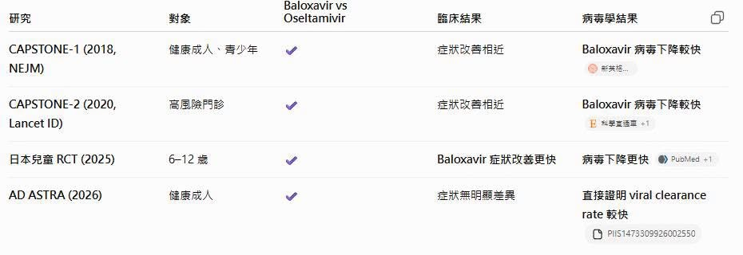
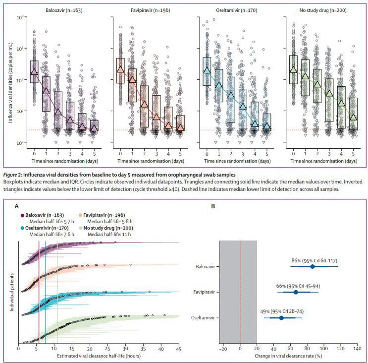
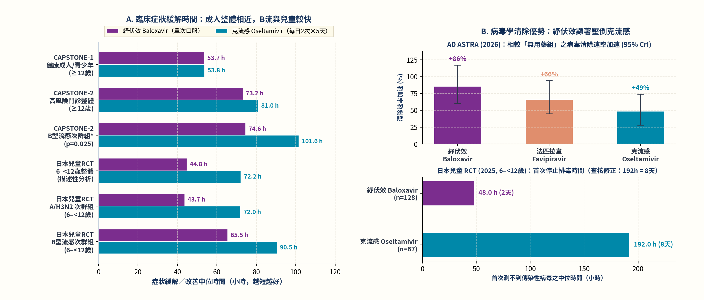

1. 核心結論與快速總覽
在基層診所遇到流感患者考慮自費抗病毒藥物時，最常被問的問題就是：「吃一次就好」的紓伏效（Baloxavir marboxil，Xofluza®）真的比傳統吃五天的克流感（Oseltamivir，Tamiflu®）有效嗎？
綜合 2018 至 2026 年的四大核心臨床試驗與兩項重磅延伸試驗（BLOCKSTONE、CENTERSTONE），答案可以濃縮成四個臨床重點：
+86% vs +49%
AD ASTRA (2026)：相較無用藥組之病毒清除速率加速（紓伏效勝出）
53.7h vs 53.8h
CAPSTONE-1：健康成人症狀緩解時間幾乎相同
48h vs 192h
日本 6–<12 歲 RCT：首次停止排毒時間整整快 6 天
家戶傳播 aOR 0.68
CENTERSTONE (2025 NEJM)：確診者治療相較安慰劑
💡 一句話門診衛教結論
紓伏效清除呼吸道病毒的速度確實明顯快於克流感，但對於 12 歲以上青少年與成人而言，體感症狀好轉的速度與克流感差不多（CAPSTONE-2 的 B 型流感次群組較快，日本兒童試驗則觀察到較快的趨勢）。紓伏效可單次服藥完成療程。CENTERSTONE 顯示，治療確診者可降低相較安慰劑的實驗室確診家戶傳播。
2. 四大關鍵 PK 試驗總表
原貼文整理了四篇直接比較紓伏效（Baloxavir）與克流感（Oseltamivir）的代表性研究（圖一）。以下保留原圖並將原始論文核對後的精確數據彙整為進階比較表：

圖一（原始附圖）：四大關鍵頭對頭研究總覽，涵蓋 CAPSTONE-1、CAPSTONE-2、日本兒童 RCT（2025）與 AD ASTRA（2026）。 日本兒童試驗的症狀時間差為描述性發現，整體差值的 95% 信賴區間跨過 0。
| 試驗名稱（年份／期刊） | 研究設計與對象 | 臨床症狀緩解中位時間 （Baloxavir vs Oseltamivir） |
病毒學結果 | 抗藥性突變 （PA/I38X） |
|---|---|---|---|---|
| CAPSTONE-1 （2018, NEJM） |
雙盲 Phase 3 RCT 12–64 歲健康門診患者 （ITTI n=1,064；H3N2 佔 ~85–88%） |
53.7 h vs 53.8 h（相近） 安慰劑組：80.2 h（p<0.001） |
服藥後第 1 天病毒量下降幅度顯著優於克流感與安慰劑 | Phase 3：9.7% Phase 2：2.2% |
| CAPSTONE-2 （2020, Lancet Infect Dis） |
雙盲 Phase 3 RCT ≥12 歲高風險門診患者 （mITT n=1,163；H3N2 48%、B流 42%） |
整體：73.2 h vs 81.0 h（無顯著差異，安慰劑 102.3 h） B 型流感次群組：74.6 h vs 101.6 h（p=0.025，紓伏效顯著較快） |
病毒複製期與病毒量下降顯著優於克流感；併發症較安慰劑降（3% vs 10%） | 5%（15/290） |
| 日本兒童 RCT （Ishiguro 2025, Infect Dis Ther） |
開放標籤 2:1 RCT 6–<12 歲日本兒童 （ITTI n=195；H3N2 51%、B流 37%） |
整體 TTIA：44.8 h vs 72.2 h（差值 −27.4 h，95% CI −52.7 至 +6.5） H3N2：43.7 vs 72.0 h；B流：65.5 vs 90.5 h；退燒時間相近（22.0 vs 23.1 h） |
首次測不到傳染性病毒中位時間：48.0 h vs 192.0 h（差 −144 h = 6 天） | 9.4%（12/128；11 例 H3N2、1 例 H1N1） 克流感組 0 例 |
| AD ASTRA （Jittamala 2026, Lancet Infect Dis） |
開放標籤 Phase 2 適應性平台試驗（Wellcome Trust 資助） 18–60 歲低風險門診成人（mITT n=729） |
三種抗病毒藥皆縮短退燒時間 0.5–0.9 天；所有症狀完全緩解時間組間無顯著差異 | 清除速率較無用藥組加速：Baloxavir +86%、Favipiravir +66%、Oseltamivir +49% 中位半衰期：5.7 h vs 7.6 h（無用藥 11 h） |
未列於主摘要（著重藥效動力學病毒清除率） |
3. 病毒清除力：紓伏效顯著勝出
兩藥在病毒學表現上之所以拉開差距，根本原因在於作用靶點位於病毒生命週期的不同階段：
- 紓伏效（Baloxavir）是選擇性「搶帽依賴性內切酶抑制劑（Cap-dependent endonuclease inhibitor）」，作用於流感病毒 RNA 聚合酶 PA 次單元，在病毒進入宿主細胞後的複製最早期直接阻斷 mRNA 合成，因此服藥 24 小時內就能讓呼吸道病毒量斷崖式下降。
- 克流感（Oseltamivir）屬於神經胺酸酶抑制劑（NAI），不阻斷細胞內的病毒複製，而是阻止新組裝好的病毒顆粒自細胞表面釋放，因此初期病毒量下降較平緩。

圖二（原始附圖，節錄自 AD ASTRA 2026, Lancet Infect Dis）：上圖為第 0 至第 5 天口咽拭子病毒濃度變化；左下（A）顯示中位病毒清除半衰期：Baloxavir 5.7 h、Favipiravir 5.8 h、Oseltamivir 7.6 h、無用藥組 11 h；右下（B）顯示相較無用藥組的病毒清除速率加速百分比。圖源：Jittamala 等人，AD ASTRA，原圖節錄，採 CC BY 4.0 授權。
🔍 AD ASTRA (2026) 數據精準解讀
原貼文簡寫「紓伏效：克流感＝86% : 49%」，容易讓讀者誤以為是「86% 的人清乾淨 vs 49% 的人清乾淨」。經核對 AD ASTRA 原文，正確定義是「相較於無用藥對照組，口咽病毒 RNA 清除速率的加速幅度」：
- Baloxavir：加速 86%（95% CrI 60–117%），中位病毒清除半衰期 5.7 小時。
- Favipiravir：加速 66%（95% CrI 45–94%），中位病毒清除半衰期 5.8 小時。
- Oseltamivir：加速 49%（95% CrI 28–74%），中位病毒清除半衰期 7.6 小時（直接頭對頭比較下，Oseltamivir 比 Baloxavir 慢 20%，95% CrI 6–32%）。
4. 症狀緩解時間：成人整體相近、B 型流感次群組較快
為什麼紓伏效清除病毒快這麼多，12 歲以上族群的整體症狀卻沒有顯著更快好？原因在於發燒、痠痛與咳嗽等症狀，很大一部分來自宿主自身的免疫發炎反應。免疫系統成熟的成人即便病毒已迅速下降，發炎與症狀消退仍需要一定時間。
以下分別整理 B 型流感次群組的結果與日本兒童試驗的描述性結果：
- 6 至未滿 12 歲兒童（Ishiguro et al., 2025）：中位症狀緩解時間（TTIA）為 44.8 小時 vs 72.2 小時（A/H3N2 為 43.7 vs 72.0 h；B 型流感為 65.5 vs 90.5 h；A/H1N1pdm 則相近 42.0 vs 43.6 h），首次停止排毒時間更大幅縮短為 48.0 小時 vs 192.0 小時。（註：該研究屬開放標籤且未設計統計檢力，整體差值 95% CI 為 −52.7 至 +6.5 小時，屬描述性優勢趨勢；另 2025 年 10 月發表於 Frontiers in Microbiology 的兒童統合分析（納入 10 篇研究、4,673 名兒童）亦支持紓伏效在兒童的症狀與發燒持續時間顯著短於克流感，p<0.01。）
- B 型流感患者（CAPSTONE-2, 2020）：克流感對 B 型流感的神經胺酸酶親和力先天較弱，在 CAPSTONE-2 高風險門診族群中，B 型流感患者使用紓伏效的症狀改善時間顯著快於克流感 27 小時（74.6 h vs 101.6 h, p=0.025），這也是原文未特別點出、但在 B 流流行季非常實用的選藥依據。

圖三（自製實證彙整圖）：左圖比較 CAPSTONE-1、CAPSTONE-2（含 B 型流感次群組）及日本 6–<12 歲兒童 RCT 的症狀緩解中位時間；右圖呈現 AD ASTRA（2026）病毒清除速率加速幅度與日本兒童 RCT 首次停止排毒時間（已校正為原論文之 192.0 小時）。 日本兒童症狀時間資料為描述性比較。
5. 證據查核總表（逐條核對原貼文）
針對原貼文中的每項關鍵陳述與數字，我們逐一比對原始期刊全文（NEJM、Lancet Infectious Diseases、Infectious Diseases and Therapy 與 EMA／FDA 藥動資料），查核結果如下：
| 原貼文陳述 | 查核判定 | 一級文獻核對結果與精確補充 |
|---|---|---|
| 「AD ASTRA 量化病毒清除速度：紓伏效：克流感＝86% : 49%」 | 正確但須釐清定義 | 數值完全正確（AD ASTRA 2026），但 86%（95% CrI 60–117）與 49%（28–74）代表相較「無用藥組」的病毒清除速率加速百分比，非清除人數比例。直接比較下克流感比紓伏效慢 20%。 |
| 「日本 6–<12 歲研究顯示第一次測不到病毒的速度為 48 小時 vs 196 小時」 | 微小數字筆誤 | 核對 Ishiguro 2025 原文，正確數字為 48.0 小時 vs 192.0 小時（8 天，差值 −144.0 小時），非 196 小時。 |
| 「12 歲以上三篇研究中，症狀緩解時間兩藥差不多」 | 整體正確、補充 B 流 | 整體族群確實無顯著差異（CAPSTONE-1: 53.7 vs 53.8 h；CAPSTONE-2: 73.2 vs 81.0 h；AD ASTRA: 症狀完全緩解無差異）。唯 CAPSTONE-2 的 B 型流感次群組中紓伏效顯著快於克流感（74.6 vs 101.6 h, p=0.025）。 |
| 「6–<12 歲兒童，紓伏效緩解症狀速度優於克流感，特別是 H3N2 和 B 流」 | 趨勢相符但非雙盲檢力試驗 | Ishiguro 2025 確實觀察到較短中位時間（H3N2: 43.7 vs 72.0 h；B流: 65.5 vs 90.5 h），但該研究為開放標籤且未設計統計檢力（整體差值 95% CI 跨過 0），且中位退燒時間相近（22.0 vs 23.1 h）。後續 2025 年兒童統合分析則補上了統計顯著證據。 |
| 「紓伏效僅服用一次，藥效可持續體內兩週」 | 概念相近、精準度修正 | 成人終端排除半衰期（t1/2）約 79.1 小時（約 3.3 天；文獻範圍 49–91 小時），依 4–5 個半衰期推算體內可測殘留約 10–14 天（約 2 週）；臨床保護窗口在 BLOCKSTONE 預防試驗 中係以 10 天評估（降發病率 1.9% vs 13.6%）。且兒童半衰期較短（約 29.4 小時，EMA 仿單）。 |
| 「無法證明較克流感降住院／死亡率、極高風險、6個月內打疫苗、禽流感」 | 四項侷限皆符合實證 | 完全屬實。重症住院 FLAGSTONE (2022) 亦未證實併用較單用 NAI 改善臨床結局；禽流感（H5N1／H7N9）目前僅有體外與動物非臨床活性數據，缺乏人類臨床試驗。 |
6. 原文四大研究侷限與延伸實證
原貼文非常中肯地指出目前 RCT 的四項侷限，我們搭配 2020–2025 年的重要延伸研究進一步補足臨床全貌：
- 住院率與死亡率（侷限 1 & 2）：上述四篇皆收案門診非重症患者，無法證明紓伏效比克流感更能降低住院或死亡。針對已住院的重症流感患者，FLAGSTONE 試驗（2022, Lancet Infect Dis）比較「紓伏效＋標準 NAI」與「安慰劑＋標準 NAI」，結果中位臨床改善時間無顯著差異（97.5 h vs 100.2 h, p=0.467），不支持重症住院常規併用。（註：2025 年 Open Forum Infect Dis 事後分析在合併糖尿病、慢性肺病或免疫低下的高風險重症次群組中看到較低死亡率訊號，但僅屬探索性結果。）
- 半年內曾接種流感疫苗者（侷限 3）：多數試驗中已接種疫苗者比例偏低（例如日本兒童 RCT 約 20–27%），尚無足夠檢力單獨證明在近期完整接種疫苗者中紓伏效優於克流感。
- 禽流感（H5N1、H7N9 等，侷限 4）：非臨床體外與動物模型顯示 Baloxavir 對 H5N1、H7N9 及克流感抗藥株具抑制活性，但人類臨床療效與最佳療程仍缺乏隨機試驗證據。
🌟 原文未納入的兩大重磅實證：家庭防護與阻斷傳播
- CENTERSTONE（2025, NEJM）——治療確診者就能保護同住家人：跨國 Phase 3b RCT（1,457 名確診患者＋2,681 名同住接觸者），首次證明確診者在發病 48 小時內單次服用紓伏效，可於第 5 天將實驗室確診之家戶傳染機率降低 32%（aOR 0.68；調整後傳染率 9.5% vs 安慰劑 13.4%，p=0.01；相對風險降 29%），且接觸者中未檢出抗藥株傳播。（唯「有症狀傳染」5.8% vs 7.6% 未達統計顯著 p=0.16。）
- BLOCKSTONE（2020, NEJM）——暴露後單劑預防：針對確診流感的同住接觸者給予單次紓伏效預防，10 天內發展為臨床流感的比例由安慰劑組的 13.6% 降至 1.9%，大幅提升高風險家屬的預防順從性（免連吃 7–10 天克流感）。
7. 門診選藥決策與用藥安全必知
把實證轉化回台灣基層診所的日常處方，以下視覺化決策圖整理了作用機轉、適用情境與關鍵衛教提醒：
基層處方必核對 4 大安全與劑量細節
- 台灣核准適應症與劑量（紓伏效仿單／台灣兒童感染症醫學會）：
- 台灣 20 mg 膜衣錠核准用於 5 歲以上且體重至少 20 公斤者的急性 A／B 型流感治療及密切接觸後預防。建議分別於發病或接觸後 48 小時內使用。
- 依體重單次口服。20 至未滿 80 公斤使用 40 mg（2 錠），80 公斤以上使用 80 mg（4 錠）。未滿 20 公斤不適用台灣此錠劑的核准劑量。
- 多價陽離子螯合交互作用（衛教最容易漏講！）：紓伏效絕對不可與牛奶／乳製品、高鈣飲品、制酸劑（胃乳／胃藥）、含鈣／鐵／鎂／鋅／硒的綜合維他命或輕瀉劑同時服用，否則會形成螯合物大幅降低血中藥物濃度，可能影響療效。
- PA/I38X 抗藥性突變考量：單劑紓伏效治療後檢出 PA/I38X 突變的比例約 5%–9.7%（成人），在 A/H3N2 與幼童族群（特別是 <6 歲）更高；雖多數研究顯示未明顯造成重症或家戶傳播，但仍應確保依體重足量給藥、避免不當交互作用，且不建議用於嚴重免疫低下者的單藥治療。
- 孕婦與哺乳婦女：因缺乏充分人體安全性資料，美國 CDC 建議孕婦及哺乳期婦女首選 Oseltamivir（克流感），不建議使用紓伏效。
8. 參考文獻與原始來源
- Hayden FG, Sugaya N, Hirotsu N, et al. Baloxavir Marboxil for Uncomplicated Influenza in Adults and Adolescents (CAPSTONE-1). N Engl J Med. 2018;379(10):913–923. DOI: 10.1056/NEJMoa1716197.
- Ison MG, Portsmouth S, Yoshida Y, et al. Early treatment with baloxavir marboxil in high-risk adolescent and adult outpatients with uncomplicated influenza (CAPSTONE-2): a randomised, placebo-controlled, phase 3 trial. Lancet Infect Dis. 2020;20(10):1204–1214.
- Jittamala P, Schilling WHK, Leopold SJ, et al. Baloxavir marboxil, favipiravir, or oseltamivir in patients with non-severe symptomatic seasonal influenza (AD ASTRA): a phase 2, open-label, adaptive, randomised controlled trial. Lancet Infect Dis. 2026 Jul 28. DOI: 10.1016/S1473-3099(26)00255-0.（Amsterdam UMC 完整摘要）
- Ishiguro N, Morioka I, Nakano T, et al. Clinical and Virologic Outcomes of Baloxavir Compared with Oseltamivir in Pediatric Patients with Influenza in Japan. Infect Dis Ther. 2025;14(4):833–846. PMCID: PMC11993522.
- Monto AS, Kuhlbusch K, Bernasconi C, et al. Efficacy of Baloxavir Treatment in Preventing Transmission of Influenza (CENTERSTONE). N Engl J Med. 2025;392(16):1582–1593.
- Kumar D, Ison MG, Mira JP, et al. Combining baloxavir marboxil with standard-of-care neuraminidase inhibitor in patients hospitalised with severe influenza (FLAGSTONE). Lancet Infect Dis. 2022;22(5):718–730.
- European Medicines Agency (EMA). Xofluza (baloxavir marboxil) Summary of Product Characteristics（成人／青少年／兒童半衰期與藥動學資料）.
- 台灣兒童感染症醫學會。兒童流感治療建議；紓伏效膜衣錠 20 毫克中文仿單。